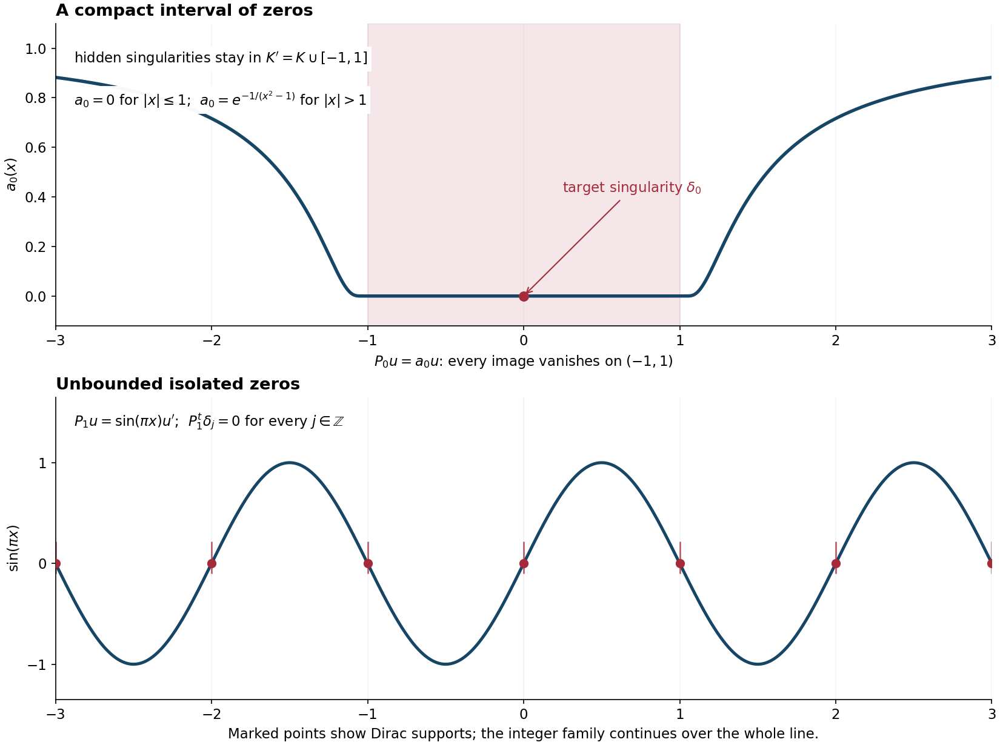

Singular supports and arbitrary distribution data
Written by GPT-6.1 Sol (OpenAI), Ultra reasoning effort, October 2026. Public domain (CC0).
Support geometry permits global solutions for smooth data and for distributions of finite order. An arbitrary distribution may have orders that grow without bound along an exhaustion. To solve for all such data, one must also control where singularities of compact distributions can occur when their images are smooth away from a fixed compact set.
We prove the precise additional condition, first as a boundary-distance test, then as an equivalence with solving the equation modulo smooth functions. Combining it with support convexity gives the criterion for all distribution data. The arguments use Local regularity, sharp embeddings, and compactness and Approximation and global solvability from support geometry.
Throughout, \(P\) is a nonzero constant-coefficient complex polynomial, \(D=-i\partial\), and \(P^t=P(-D)\) is the complex-linear transpose. Singular support is denoted by \(\operatorname{singsupp}\): its complement is the largest open set on which a distribution is smooth. Differential operators do not increase singular support.
Continuous functionals, test families and compact limits, Sections 1–3, proves the seminorm extension, fixed-support test topology, countable dense test family and smooth compact subsequence used below. The Fréchet closed graph theorem is Banach estimates, quotient spaces and compact parameter arguments, Section 14.5.
A compact bound on singularities
An open set \(X\subset\mathbb R^n\) is \(P\)-convex for singular supports if for each compact \(K\subset X\) there is a compact \(K'\subset X\) such that
\[ \begin{gathered} v\in\mathcal E'(X),\qquad \operatorname{singsupp}P^tv\subset K\\ \Longrightarrow\quad \operatorname{singsupp}v\subset K'. \end{gathered} \tag{1} \]The bound concerns singularities, rather than the whole support of \(v\). Its support may be much larger than \(K'\).
We use the following compact Fourier prerequisite, for \(v\in\mathcal E'(\mathbb R^n)\):
\[ \operatorname{ch}\operatorname{singsupp}P^tv =\operatorname{ch}\operatorname{singsupp}v, \tag{2} \]The convex hull of the empty set is empty. This is the singular-support version of the compact support theorem. The full compact polynomial singular-support hull identity is proved in Locating singularities through logarithmic Fourier strips, Theorem 5.1, including the empty singular-support case. It applies to the transpose because its symbol is the original polynomial evaluated at the negative Fourier variable, which is also nonzero. It is separate from the already proved ordinary support-hull theorem. In particular, a compact distribution whose image is smooth is itself smooth. Formula (2) places every singularity of \(v\) in the convex hull of the singularities of \(P^tv\). For an open convex \(X\), that hull lies in \(X\) and proves (1).
Condition (1) also applies to a global compact distribution whose singular support lies in \(X\), even when its full support does not. Choose \(\chi\in C_c^\infty(X)\) equal to one near \(S=\operatorname{singsupp}v\). Then
\[ \begin{gathered} \operatorname{singsupp}(\chi v)=S,\\ \operatorname{singsupp}P^t(\chi v) =\operatorname{singsupp}P^tv. \end{gathered} \tag{3} \]Indeed the commutator is supported where derivatives of \(\chi\) occur, and \(v\) is smooth there. Also the singular support of \(P^tv\) is contained in \(S\), where \(\chi=1\). Apply (1) to \(\chi v\). This extension of the definition lets us translate singular sets without requiring the translated full support to stay inside \(X\).
Smoothness from an empty image singular support
Lemma 1.1. Assume (1). If a global compact distribution \(v\) has \(\operatorname{singsupp}v\subset X\) and \(P^tv\) is smooth on \(\mathbb R^n\), then \(v\) is smooth. In particular, a distribution in \(\mathcal E'(X)\) whose image is smooth on \(X\) is smooth on \(X\).
Lemma 1.1 and its proof: GPT-6 Astra (OpenAI), Ultra reasoning effort, October 2026; AI self-check, CC0.
Proof. Condition (1) with \(K=\varnothing\) supplies one compact bound \(B\subset X\). Suppose \(S=\operatorname{singsupp}v\) is nonempty. Then \(X\) is nonempty and \(n\ge1\): on the one-point space \(\mathbb R^0\), every distribution is a smooth scalar function. Fix a nonzero real vector \(e\). Define translation by \((\tau_{te}v)(\phi)=v(\phi(\,·+te))\). Its singular support is \(S+te\), and constant coefficients give \(P^t\tau_{te}v=\tau_{te}P^tv\), so its image remains smooth.
Let \(t_0\) be the infimum of the nonnegative times \(t\) for which \(S+te\not\subset X\), taking \(t_0=\infty\) if there are none. Compactness of \(S\) inside the open set \(X\) gives \(t_0>0\). For every \(0\le t<t_0\), the cutoff extension (3) applies to \(\tau_{te}v\), even if its full support has left \(X\). Since the image has no singularities, the same bound gives \(S+te\subset B\) for every such \(t\).
If \(t_0<\infty\), choose times \(t_j\to t_0\) with \(t_j\ge t_0\) and points \(s_j\in S\) such that \(s_j+t_je\notin X\). A subsequence converges to \(s_*\in S\). The complement of \(X\) is closed, hence \(s_*+t_0e\notin X\). But \(s_*+re\in B\) for every \(0\le r<t_0\); letting \(r\uparrow t_0\) puts this same point in the closed set \(B\subset X\), a contradiction. If \(t_0=\infty\), fix \(s_*\in S\). The entire ray \(s_*+te\), \(t\ge0\), lies in the compact set \(B\), although its norm tends to infinity. This is also impossible. Thus \(S=\varnothing\).
For the last assertion, extend the compactly supported distribution in \(X\) by zero. Its support is compactly contained in \(X\), so the extension and its differential image vanish near the complement of \(X\). An image smooth on \(X\) is consequently smooth globally, and the first assertion applies. \(\square\)
This argument uses only (1), the cutoff identity (3), and translation. It supplies the empty bounds used in Lemma 4.1 without the full hull identity (2). The latter remains the stronger result used in the boundary-distance and convex-domain assertions.
Boundary distance and stable domains
Put \(d_X(x)=\operatorname{dist}(x,\mathbb R^n\setminus X)\), with value infinity if the complement is empty. For a compact set \(S\), put \(d_X(S)=\inf_{x\in S}d_X(x)\), with \(d_X(\varnothing)=\infty\).
Theorem 2.1. The open set \(X\) is \(P\)-convex for singular supports if and only if, for every \(v\in\mathcal E'(X)\),
\[ d_X(\operatorname{singsupp}v) =d_X(\operatorname{singsupp}P^tv) \tag{4} \]Proof. Assume (4). Given compact \(K\subset X\), let \(a=d_X(K)>0\), and set
\[ K'=\{x\in\operatorname{ch}K:d_X(x)\ge a\}. \tag{5} \]This is a compact subset of \(X\). Formula (2) and (4) put \(\operatorname{singsupp}v\) in (5) whenever \(\operatorname{singsupp}P^tv\subset K\). If that image has empty singular support, (2) makes \(v\) smooth. If \(X=\mathbb R^n\), use \(K'=\operatorname{ch}K\). Thus (1) follows, including the empty cases.
Conversely assume (1). Let \(S=\operatorname{singsupp}v\) and \(T=\operatorname{singsupp}P^tv\). Locality gives \(T\subset S\) and hence \(d_X(S)\le d_X(T)\). Empty \(S\) and empty complement are immediate. Suppose strict inequality holds. A nearest pair \(x_0\in S\), \(y_0\notin X\) exists because \(S\) is compact and the complement is closed. Write
\[ \begin{gathered} b=|y_0-x_0|=d_X(S)<d_X(T)=a,\\ h_t=t(y_0-x_0). \end{gathered} \]Let \(t_0\) be the first \(t\in[0,1]\) for which \(S+h_t\) meets the complement of \(X\). Compactness and the positive initial distance imply \(0<t_0\le1\), and at \(t_0\) there is a boundary contact. For \(t<t_0\) the translated singular set lies in \(X\). All translated image singular sets lie in the fixed compact
\[ K=\bigcup_{0\le t\le1}(T+h_t)\subset X, \tag{6} \]because their distances are at least \(a-b>0\). If \(T\) is empty, take \(K=\varnothing\).
Translation commutes with \(P^t\). Apply the extended form (3) of singular support convexity to each translated \(v\). It places every \(S+h_t\), \(t<t_0\), in one compact \(K'\subset X\). Their boundary contact at \(t_0\) contradicts this fixed bound. Hence strict inequality is impossible and (4) holds. \(\square\)
Corollary 2.2. Interiors of arbitrary intersections of open sets satisfying (1) satisfy (1). Directed unions do as well, and so does the open lower limit
\[ \bigcup_{J\subset I\text{ finite}} \operatorname{int}\bigcap_{i\in I\setminus J}X_i. \tag{7} \]Every open set has a least open enlargement satisfying (1).
Proof. For \(X=\operatorname{int}\bigcap_iX_i\), its complement is the closure of the union of the complements. Thus \(d_X(S)=\inf_i d_{X_i}(S)\) for every compact \(S\). Apply (4) in each \(X_i\) and take infima. For a directed union, a compact support lies in one member, and the supremum of its distances to the decreasing complements of larger members is its distance to their intersection. To verify this last fact, intersect the complements with a compact closed neighborhood of the support of any radius greater than the supremum. The finite intersection property supplies a point in their common intersection. Let that radius decrease to the supremum; the infinite case is immediate. The equality in (4) therefore passes to the union.
Expression (7) is a directed union of interiors of intersections, indexed by finite exceptional sets. For a sequence it is \(\bigcup_N\operatorname{int}\bigcap_{j\ge N}X_j\). Finally, take the interior of the intersection of all open enlargements with (1); this family contains \(\mathbb R^n\), and its intersection still contains the given open set. \(\square\)
Why surjectivity modulo smooth functions is necessary
Write \(H^s=B_{2,\langle\xi\rangle^s}\), for real \(s\). We will use the local Sobolev spaces for all real exponents.
Lemma 3.1. If a distribution \(v\) on \(Y\) has \(D^\alpha v\in H^s_{\mathrm{loc}}(Y)\) for every multi-index \(\alpha\), with one fixed \(s\), then \(v\) is smooth.
Proof. For \(\chi\in C_c^\infty(Y)\), Leibniz's formula and the cutoff multiplier bound place every \(D^\alpha(\chi v)\) in \(H^s\). The elementary Fourier polynomial identity for \(\langle\xi\rangle^{2N}\) then places \(\chi v\) in \(H^{s+N}\) for every nonnegative integer \(N\). The Sobolev embeddings proved in the local regularity lesson give every order of continuous derivatives. Vary \(\chi\). \(\square\)
Theorem 3.2. If for every \(f\in\mathcal D'(X)\) there are \(u\in\mathcal D'(X)\) and \(g\in C^\infty(X)\) with
\[ P(D)u=f+g, \tag{8} \]then \(X\) satisfies (1).
Proof. If (1) fails for a compact \(K\subset X\), choose an exhaustion by compact sets \(L_j\subset X\). Inductively choose \(\mu_j\in\mathcal E'(X)\) and points \(x_j\) so that
\[ \begin{aligned} &\operatorname{singsupp}P^t\mu_j\subset K,\\ &x_j\in\operatorname{singsupp}\mu_j,\\ &x_j\notin L_j\cup\bigcup_{\ell<j}\operatorname{supp}\mu_\ell. \end{aligned} \tag{9} \]Failure of a uniform compact bound allows this choice at each step. The points are locally finite in \(X\). Choose decreasing symmetric bounded neighborhoods \(Y_j\) of zero with
\[ \begin{aligned} &K+\overline Y_1\Subset X, \quad \operatorname{supp}\mu_j+\overline Y_j\Subset X,\\ &x_\ell\notin\operatorname{supp}\mu_j+\overline Y_j \quad(\ell>j). \end{aligned} \tag{10} \]Here \(A\Subset X\) means that its closure is compact in \(X\). Local finiteness and the disjointness in (9) give a positive distance from the compact \(\operatorname{supp}\mu_j\) to all future points, so these neighborhoods exist.
Every compact distribution belongs to \(H^{s_j}\) for some sufficiently negative \(s_j\). This follows from its polynomial Fourier growth and an integrable negative power of \(\langle\xi\rangle\). Set \(a_0=0\). Lemma 3.1 and \(x_j\in\operatorname{singsupp}\mu_j\) allow a multi-index \(\alpha_j\) such that
\[ \begin{gathered} D^{\alpha_j}\mu_j\notin H^{s_j-a_{j-1}}_{\mathrm{loc}}(x_j+Y_j), \\ a_j=|\alpha_j|>a_{j-1}. \end{gathered} \tag{11} \]The strict inequality follows because derivatives of order at most \(a_{j-1}\) already belong to that space. Define the locally finite distribution
\[ f=\sum_{j\ge1}(-D)^{\alpha_j}\delta_{x_j}. \tag{12} \]Assume (8) for this \(f\), and test it on \(\mu_k*\varphi\), with \(\varphi\in C_c^\infty(Y_k)\). The future terms vanish by (10), giving
\[ \begin{gathered} (D^{\alpha_k}\mu_k*\varphi)(x_k)\\ =u(P^t\mu_k*\varphi)-g(\mu_k*\varphi)\\ -\sum_{j<k}(D^{\alpha_j}\mu_k*\varphi)(x_j). \end{gathered} \tag{13} \]We estimate the right side with a Sobolev norm of \(\varphi\). Fourier Cauchy–Schwarz gives, for any multi-index \(\beta\),
\[ \begin{aligned} \sup|D^\beta\mu_k*\varphi| &\le C\|\mu_k\|_{H^{s_k}}\\ &\quad\times\|\varphi\|_{H^{|\beta|-s_k}}. \end{aligned} \tag{14} \]Hence the finite sum in (13) is bounded by \(C_k\|\varphi\|_{H^{a_{k-1}-s_k}}\). The smooth \(g\) term is bounded by \(C_{k,r}\|\varphi\|_{H^r}\) for every real \(r\): replace \(g\) by a compact smooth function agreeing with it near \(\operatorname{supp}\mu_k+\overline Y_k\), then move the convolution onto that smooth function and use Sobolev duality.
Choose \(\chi\in C_c^\infty(X)\) equal to one near \(K\), with \(\operatorname{supp}\chi+\overline Y_1\Subset X\). Split
\[ \begin{gathered} P^t\mu_k=v_k'+v_k'',\\ v_k'=\chi P^t\mu_k\in H^{s_k-m},\\ v_k''=(1-\chi)P^t\mu_k\in C_c^\infty(X). \end{gathered} \tag{15} \]where \(m=\deg P\). The second term is smooth because all image singularities lie in \(K\). As for the \(g\) term, \(|u(v_k''*\varphi)|\le C_{k,r}\|\varphi\|_{H^r}\) for every \(r\): all derivatives of the smooth convolution on its fixed compact support have this bound, and \(u\) has finite order on that compact.
The support of \(v_k'*\varphi\) lies in the one fixed compact \(\operatorname{supp}\chi+\overline Y_1\). Let \(c\) be an order of \(u\) there. Applying (14) to \(v_k'\) bounds its contribution by
\[ |u(v_k'*\varphi)| \le C_k\|\varphi\|_{H^{c+m-s_k}}. \tag{16} \]Since \(a_{k-1}\to\infty\), for large \(k\) all the estimates combine into
\[ |(D^{\alpha_k}\mu_k*\varphi)(x_k)| \le C_k\|\varphi\|_{H^{a_{k-1}-s_k}}, \tag{17} \]Estimate (17) holds for every \(\varphi\in C_c^\infty(Y_k)\). Reflection about \(x_k\) converts this convolution evaluation into the action of \(D^{\alpha_k}\mu_k\) on a test function in \(x_k+Y_k\). Multiply such tests by an arbitrary compact cutoff in that neighborhood. The cutoff bound and Hilbert-space duality applied to (17) imply
\[ D^{\alpha_k}\mu_k\in H^{s_k-a_{k-1}}_{\mathrm{loc}}(x_k+Y_k), \]contradicting (11). Thus (1) cannot fail. \(\square\)
No bounded order was imposed on (12). Its orders increase precisely to overcome any fixed order of a putative solution on the compact containing the image singularities.
Regularity of bounded families away from image singularities
To prove sufficiency we use Fréchet closed graph, complex Hahn–Banach, and the usual test-function LF topology: a seminorm on \(\mathcal D(X)\) is continuous when its restriction to every fixed compact support space \(\mathcal D_K\) is continuous. The Fréchet closed graph theorem applies to complete metrizable locally convex spaces, not just Banach spaces. The exact written proofs are Continuous functionals, test families and compact limits, Sections 1–2, and Banach estimates, quotient spaces and compact parameter arguments, Sections 14.1–14.5.
Assume (1). Choose compact exhaustions \(K_j,K_j'\subset X\), for \(j\ge1\), so that
\[ K_j\subset\operatorname{int}K_j', \qquad K_j'\subset\operatorname{int}K_{j+1}, \tag{18} \]and \(K_j'\) bounds singularities when the image singular support is in \(K_j\). Enlarge the sets at each step to include a fixed ordinary exhaustion. Put \(K_{-1}=K_0=K_{-1}'=K_0'=\varnothing\); the bound for empty image singular support follows from Lemma 1.1 under (1).
For \(j\ge0\), let \(V_j\) consist of continuous global functions supported in \(K_{j+1}'\) for which \(P^tv\) is smooth on \(X\setminus K_{j-1}\). Give it the supremum norm of \(v\), together with all compact derivative seminorms of \(P^tv\) on that open set.
Lemma 4.1. The space \(V_j\) is Fréchet, and restriction gives a continuous map
\[ V_j\longrightarrow C^\infty(X\setminus K_{j-1}'). \tag{19} \]A bounded sequence in \(V_j\) has a subsequence converging in \(C^\infty\) on each compact subset of \(X\setminus K_{j-1}'\).
Proof. A countable compact exhaustion gives countably many increasing seminorms. A Cauchy sequence converges uniformly to a continuous supported \(v\); the images converge in the indicated smooth space. Distributional differentiation identifies their limit with \(P^tv\). This proves completeness. The singular support of \(P^tv\) lies in \(K_{j-1}\), so (1) puts that of \(v\) in \(K_{j-1}'\). Thus (19) is well defined. Its graph is closed, since uniform convergence of \(v\) identifies any possible smooth restriction limit. Fréchet closed graph proves continuity. Boundedness now bounds every derivative on compact subsets of the target. Arzelà–Ascoli and a diagonal choice over the derivative orders and a countable compact exhaustion give the subsequence. \(\square\)
A global estimate with a smooth error term
Lemma 5.1. Given \(f\in\mathcal D'(X)\), there are a continuous seminorm \(q\) on \(\mathcal D(X)\), a constant \(C\), and a sequence \(\psi_\ell\in C_c^\infty(X)\) whose supports form a locally finite family, such that
\[ \begin{gathered} |f(v)|+\sup|v|\\ \le C\left(q(P^tv)+\sum_\ell|v(\psi_\ell)|\right). \end{gathered} \tag{20} \]This holds for every \(v\in\mathcal D(X)\). Here \(v(\psi)=\int v\psi\), and the sum is finite for each test \(v\).
Proof. We extend an estimate one compact support space at a time. Write \(A(v)=|f(v)|+\sup|v|\). Suppose that
\[ A(v)\le C\left(q(P^tv)+\sum_{\ell\le b}|v(\psi_\ell)|\right) \tag{21} \]Assume (21) for every \(v\in\mathcal D_{K_j}\). For \(j=0\), this is vacuous and we start with \(C=1,q=0,b=0\). Fix \(\varepsilon>0\). We claim it can be extended to \(\mathcal D_{K_{j+1}}\) with constant \(C(1+\varepsilon)\), by adding finitely many compact derivative seminorms on \(X\setminus K_{j-1}\) to \(q\), and finitely many \(\psi\) supported in \(X\setminus K_{j-1}\).
Take a countable collection \(p_a\) of compact derivative seminorms generating \(C^\infty(X\setminus K_{j-1})\), and a sequence \(\eta_a\) dense in \(\mathcal D(X\setminus K_{j-1})\). Such a sequence is obtained from a countable compact exhaustion and countable dense sets in the corresponding test spaces. If the claim fails, for each \(N\) there is \(v_N\in\mathcal D_{K_{j+1}}\), normalized so that
\[ \begin{gathered} A(v_N)=C(1+\varepsilon),\\ \begin{aligned} &q(P^tv_N)+\sum_{\ell\le b}|v_N(\psi_\ell)|\\ &+N\sum_{a\le N}p_a(P^tv_N)\\ &+N\sum_{a\le N}|v_N(\eta_a)|<1. \end{aligned} \end{gathered} \tag{22} \]Indeed these are permissible finite additions to the proposed estimate; rescaling a counterexample gives the normalization.
The sequence is uniformly bounded in supremum norm, and \(P^tv_N\to0\) in \(C^\infty(X\setminus K_{j-1})\). It is bounded in \(V_j\). Lemma 4.1 makes its restrictions precompact in \(C^\infty(X\setminus K_{j-1}')\). Also \(v_N(\eta_a)\to0\) for each \(a\). Uniform boundedness of \(v_N\) and density of the tests show that every smooth restriction limit is zero: the convergence extends from the dense tests to all tests by the integral bound on their compact supports. Thus the entire sequence tends to zero in that smooth space; otherwise a subsequence bounded away from zero in one seminorm would have a further subsequence converging to zero.
Choose \(\chi\in C_c^\infty(\operatorname{int}K_j)\) equal to one near \(K_{j-1}'\), with \(0\le\chi\le1\). When \(j=0\), both sets are empty and take \(\chi=0\). The supports of \((1-\chi)v_N\) lie in the fixed compact \(K_{j+1}\), and these functions tend to zero with every derivative, by the preceding smooth convergence. Hence
\[ (1-\chi)v_N\longrightarrow0\quad\text{in }\mathcal D(X). \tag{23} \]Continuity of \(f,q,P^t\), and the finitely many old pairings gives
\[ \begin{aligned} A(\chi v_N)&\ge C(1+\varepsilon)-o(1),\\ q(P^t\chi v_N)+\sum_{\ell\le b}|(\chi v_N)(\psi_\ell)| &\le1+o(1). \end{aligned} \]But \(\chi v_N\in\mathcal D_{K_j}\), so (21) contradicts these inequalities for large \(N\). This proves the extension claim.
Iterate with positive \(\varepsilon_j\) having finite sum; then \(\prod_j(1+\varepsilon_j)<\infty\), so the constants stay bounded. Every new seminorm and test at stage \(j\) is supported outside \(K_{j-1}\). On any fixed \(\mathcal D_{K_a}\), all additions for sufficiently large \(j\) vanish. Their sum therefore defines a finite, continuous seminorm on each such space, and hence a continuous LF seminorm \(q\) on \(\mathcal D(X)\). The same support property makes the new tests a locally finite family. Every compact support space is eventually reached, so the limit of (21) gives (20). \(\square\)
Theorem 5.2. If \(X\) satisfies (1), then for every \(f\in\mathcal D'(X)\) there are \(u\in\mathcal D'(X)\) and \(g\in C^\infty(X)\) with \(P(D)u=f+g\).
Proof. Use (20), and define on the range of
\[ \begin{gathered} T:\mathcal D(X)\longrightarrow\mathcal D(X)\oplus\ell^1,\\ Tv=(P^tv,(v(\psi_\ell))_\ell). \end{gathered} \tag{24} \]the functional \(Tv\mapsto f(v)\). It is well defined and bounded by \(C(q(w)+\|a\|_{\ell^1})\). Complex Hahn–Banach extends it to the whole direct sum with that bound. Its restriction to the first summand is a distribution \(u\), and its restriction to \(\ell^1\) is given by a bounded scalar sequence \((c_\ell)\). Thus
\[ f(v)=u(P^tv)+\sum_\ell c_\ell v(\psi_\ell). \tag{25} \]The sum \(h=\sum_\ell c_\ell\psi_\ell\) is smooth because its supports are locally finite. Formula (25) says \(f=P(D)u+h\). Take \(g=-h\). \(\square\)
Combining Theorems 3.2 and 5.2, singular support convexity is exactly surjectivity of the induced operator on \(\mathcal D'(X)/C^\infty(X)\). Neither theorem asserts a continuous linear choice of \(u\).
Solving for every distribution
Theorem 6.1. The equation \(P(D)u=f\) has a solution \(u\in\mathcal D'(X)\) for every \(f\in\mathcal D'(X)\) if and only if \(X\) is \(P\)-convex both for supports and for singular supports.
Proof. Surjectivity for all distributions implies solvability for all smooth data; Theorem 5.1 of the support geometry lesson then gives support convexity. It also implies (8), so Theorem 3.2 gives singular support convexity.
Conversely, singular support convexity and Theorem 5.2 give \(P(D)u=f+g\) with smooth \(g\). Support convexity and Corollary 6.3 of that lesson give a smooth \(w\) satisfying \(P(D)w=g\). Then \(P(D)(u-w)=f\). \(\square\)
Every open convex set satisfies both conditions, by the compact support and singular-support hull identities. Thus it admits solutions for all distribution data, regardless of how their orders grow near its boundary or at infinity.
Translation invariance was used in Theorems 2.1 and 3.2. For a variable coefficient operator, those necessity arguments require separate justification. The following section isolates the compact regularity input in sufficiency and proves the smooth-coefficient examples explicitly.
What changes with smooth coefficients?
Translation invariance has two separate roles. It supplies the empty-image regularity in Lemma 1.1, and it supports the necessity argument in Theorem 3.2. The following sufficient criterion identifies exactly the extra input used by the functional-analytic construction when the coefficients vary.
Let \(M\) be a second-countable smooth manifold without boundary, equipped with a positive smooth density \(dV\). Distributions pair complex-linearly with smooth compact tests using this density. Let \(P\) be a finite-order differential operator with smooth complex coefficients, and let \(Q=P^t\) be its formal transpose, including the coefficient and density derivatives.
Theorem 7.1. Suppose that the following two conditions hold.
- For every compact \(K\subset M\) there is a compact \(K'\subset M\) such that
- Compact distributions with smooth image are smooth:
Then every \(f\in\mathcal D'(M)\) has a solution modulo a smooth function:
\[ Pu=f+g,\qquad u\in\mathcal D'(M),\quad g\in C^\infty(M). \tag{VC3} \]Condition (VC2) is sufficient, rather than asserted necessary.
Proof. The test spaces and smooth seminorms are defined chart by chart. A countable relatively compact coordinate cover gives a countable compact exhaustion; compact annuli and coordinate bump functions give the cutoffs used below. Each compact meets only finitely many members of a suitably chosen locally finite refinement. On a fixed compact support space, finitely many coordinate charts define the usual Fréchet derivative topology. Their union defines the test-function LF topology. In particular a seminorm on tests is continuous if its restriction to every fixed compact support space is continuous. These are the same test-space and closed-graph facts used in Lemmas 4.1 and 5.1.
Choose compact exhaustions \(K_j,K_j'\), \(j\ge1\), with
\[ K_j\subset\operatorname{int}K_j',\qquad K_j'\subset\operatorname{int}K_{j+1}, \tag{VC4} \]and with \(K_j'\) a bound in (VC1) for \(K_j\). This is possible successively: include a fixed exhaustion and the preceding sets in \(K_j\), take a bound from (VC1), and enlarge that bound to a compact neighborhood. Put
\[ K_{-1}=K_0=K_{-1}'=K_0'=\varnothing. \]Condition (VC2), rather than (VC1) with an unspecified bound, permits the empty bound here.
For \(j\ge0\), let \(V_j\) be the space of continuous functions supported in \(K_{j+1}'\) whose image under \(Q\) is smooth on \(M\setminus K_{j-1}\). Give it the supremum norm and all compact chart-derivative seminorms of that image. It is Fréchet. Indeed a Cauchy sequence has a uniform continuous supported limit and a smooth image limit on the indicated open set; continuity of differential operators on distributions identifies that limit with \(Qv\).
Conditions (VC1) and (VC2) make restriction a map
\[ V_j\longrightarrow C^\infty(M\setminus K_{j-1}'). \tag{VC5} \]For the empty initial sets use (VC2); otherwise apply (VC1). Its graph is closed, since uniform convergence identifies any possible smooth restriction limit. The Fréchet closed graph theorem makes (VC5) continuous. A bounded sequence therefore bounds every derivative on compact subsets of its target. Arzelà–Ascoli in finitely many charts, followed by a diagonal choice over compact sets and derivative orders, gives a smoothly convergent subsequence there.
We now construct the estimate needed for Hahn–Banach. For tests write
\[ A(v)=|f(v)|+\sup_M|v|. \]Suppose that on \(\mathcal D_{K_j}(M)\) we already have
\[ A(v)\le C\left(q(Qv)+\sum_{\ell\le b} \left|\int_M v\psi_\ell\,dV\right|\right), \tag{VC6} \]where \(q\) is a continuous test seminorm and the list is finite. At \(j=0\) take \(C=1,q=0,b=0\); the assertion is vacuous.
Fix \(\varepsilon>0\). We claim that (VC6) extends to \(\mathcal D_{K_{j+1}}(M)\) with constant \(C(1+\varepsilon)\), after adding finitely many compact derivative seminorms supported outside \(K_{j-1}\) to \(q\), and finitely many smooth tests supported there to the list. Choose a countable defining family \(p_a\) for smooth functions on \(M\setminus K_{j-1}\), and a countable dense collection \(\eta_a\) of tests on that open set. Such a collection comes from a countable compact exhaustion and countable dense families in its Fréchet support spaces.
If the claim failed, for each positive integer \(N\) rescaling a counterexample would give \(v_N\in\mathcal D_{K_{j+1}}(M)\) with
\[ \begin{aligned} A(v_N)&=C(1+\varepsilon),\\ q(Qv_N)+\sum_{\ell\le b}\left|\int_M v_N\psi_\ell\,dV\right| &+N\sum_{a\le N}p_a(Qv_N) +N\sum_{a\le N}\left|\int_M v_N\eta_a\,dV\right|<1. \end{aligned} \tag{VC7} \]These functions are uniformly bounded in supremum norm, and their images tend to zero smoothly on \(M\setminus K_{j-1}\). They are bounded in \(V_j\). By (VC5) their restrictions are precompact on \(M\setminus K_{j-1}'\). Every restriction limit is zero: the pairings with every \(\eta_a\) tend to zero, and the uniform supremum bound extends this convergence to all tests by approximation in \(L^1(dV)\). Thus the whole sequence tends to zero smoothly on that smaller open set; otherwise a subsequence bounded away from zero in one smooth seminorm would have a further subsequence converging to zero.
Choose \(\chi\in C_c^\infty(\operatorname{int}K_j)\) equal to one near \(K_{j-1}'\), with \(0\le\chi\le1\). For \(j=0\) take \(\chi=0\). Since the supports stay in \(K_{j+1}\),
\[ (1-\chi)v_N\longrightarrow0 \quad\hbox{in }\mathcal D(M). \tag{VC8} \]Continuity of \(f,q,Q\), and the finitely many old integral pairings now gives
\[ \begin{aligned} A(\chi v_N)&\ge C(1+\varepsilon)-o(1),\\ q(Q(\chi v_N))+ \sum_{\ell\le b}\left|\int_M\chi v_N\psi_\ell\,dV\right| &\le1+o(1). \end{aligned} \]But \(\chi v_N\in\mathcal D_{K_j}(M)\), so this contradicts (VC6). No commutation of \(Q\) with translations or cutoffs was used: the difference in (VC8) tends to zero in the full test topology, and a smooth-coefficient differential operator is continuous in that topology.
Iterate with positive \(\varepsilon_j\) of finite sum. The products of \(1+\varepsilon_j\) stay bounded. Every new seminorm and every new test at stage \(j\) is supported outside \(K_{j-1}\). Consequently their sum restricts to a finite continuous seminorm on each fixed support space, and the new tests form a locally finite family. The limit of (VC6) gives
\[ |f(v)|+\sup|v|\le C\left(q(Qv)+ \sum_\ell\left|\int_Mv\psi_\ell\,dV\right|\right) \qquad(v\in\mathcal D(M)). \tag{VC9} \]Define \(Tv=(Qv,(\int_Mv\psi_\ell\,dV)_\ell)\). Its second component has finite support for each compact test and belongs to \(\ell^1\). Estimate (VC9) makes \(Tv\mapsto f(v)\) well defined and bounded by \(C(q(w)+\|a\|_{\ell^1})\). Complex Hahn–Banach extends it to \(\mathcal D(M)\oplus\ell^1\) with this bound. The first restriction is a distribution \(u\); the second is represented by a bounded scalar sequence \(c_\ell\). Therefore
\[ f(v)=u(Qv)+\sum_\ell c_\ell\int_Mv\psi_\ell\,dV. \]The locally finite sum \(h=\sum_\ell c_\ell\psi_\ell\) is smooth, so \(Pu=f-h\). Taking \(g=-h\) proves (VC3). \(\square\)
For constant coefficients, singular-support convexity supplies (VC2) by Lemma 1.1. Theorem 7.1 therefore preserves the full constant-coefficient sufficient theorem already proved above.
A compact zero region defeats the bound alone
Example 7.2. On the line define
\[ a_0(x)= \begin{cases} 0,& |x|\le1,\\ \exp\!\bigl(-1/(x^2-1)\bigr),& |x|>1, \end{cases} \qquad P_0u=a_0u. \tag{VC10} \]This is a nonzero smooth differential operator of order zero. To check smoothness at the two endpoints, put \(b(t)=e^{-1/t}\) for \(t>0\) and \(b(t)=0\) otherwise. Each positive-side derivative is a polynomial in \(1/t\) times \(e^{-1/t}\). Every such product tends to zero at zero: an exponential dominates every fixed power, as its power series shows. All one-sided derivatives therefore join with zero. Now \(a_0(x)=b(x^2-1)\).
Here \(P_0^t=P_0\). Off the compact zero set \([-1,1]\), multiplication by \(1/a_0\) is smooth, so
\[ \operatorname{singsupp}v \subset\operatorname{singsupp}(a_0v)\cup[-1,1]. \tag{VC11} \]For every compact \(K\), the choice \(K'=K\cup[-1,1]\) proves (VC1). Nevertheless \(P_0u=\delta_0+g\) is impossible for smooth \(g\): its left side vanishes on \((-1,1)\), which would make \(\delta_0\) smooth there. A smooth function supported at one point is zero, whereas delta is not. Condition (VC2) fails as well, because \(a_0\delta_0=0\).
Reference: [HII, remark after Theorem 10.7.8] extends the sufficient assertion to smooth coefficients; (VC10)–(VC11) show why the singularity bound, with the literal definition (VC1), needs an additional regularity input.
Isolated zero points defeat necessity
Example 7.3. The operator
\[ P_1u=\sin(\pi x)\,u' \tag{VC12} \]is surjective on \(\mathcal D'(\mathbb R)\), although the analogue of singular-support convexity fails.
We first prove the required division statement. Near a simple zero \(j\in\mathbb Z\), write \(\sin(\pi x)=(x-j)b_j(x)\), where \(b_j\) is smooth and nonzero on a sufficiently small interval \(I_j\). Choose \(\rho_j\in C_c^\infty(I_j)\) with \(\rho_j(j)=1\). The map
\[ R_j\phi(x)=\frac{\phi(x)-\phi(j)\rho_j(x)}{x-j} \tag{VC13} \]has a smooth value at \(j\) and compact support. It is continuous on test functions: near \(j\), the zero numerator divided by \(x-j\) equals the integral of its first derivative along the segment from \(j\) to \(x\); away from \(j\), ordinary division has bounded derivatives on each relevant compact set. For tests in one fixed support space, the output support lies in its union with \(\operatorname{supp}\rho_j\).
For any distribution \(T\) on \(I_j\), define \(W(\phi)=T(R_j\phi)\). Since \(R_j((x-j)\phi)=\phi\), one has \((x-j)W=T\). Multiplying \(W\) by \(1/b_j\) solves \(\sin(\pi x)V=T\) there. Away from the integers division is ordinary smooth multiplication. Choose a locally finite interval cover of these two types and a subordinate smooth partition of unity. Multiply the local solutions by the partition functions and sum. Multiplication by the coefficient commutes with these cutoffs, so for every global \(f\) this gives \(V\in\mathcal D'(\mathbb R)\) with \(\sin(\pi x)V=f\).
Every distribution on the line has a primitive. Explicitly choose \(\rho\in C_c^\infty(\mathbb R)\) with integral one, and put
\[ J\phi(x)=\int_{-\infty}^{x} \left(\phi(t)-\rho(t)\int_{\mathbb R}\phi(s)\,ds\right)dt . \tag{VC14} \]The integrand has total integral zero, so \(J\phi\) is smooth and compactly supported. On a fixed support space its support stays in one compact interval and every derivative is bounded by finitely many derivatives of \(\phi\). Thus \(u(\phi)=-V(J\phi)\) is a distribution. Since \(J(\phi')=\phi\), distributional differentiation gives \(u'=V\), hence \(P_1u=f\).
For the transpose,
\[ P_1^tv=-\partial_x(\sin(\pi x)v),\qquad P_1^t\delta_j=0\quad(j\in\mathbb Z). \tag{VC15} \]The last equality uses \(\sin(\pi j)=0\). Each \(\delta_j\) has singular support \(\{j\}\), while every image has empty singular support. No fixed compact \(K'\) can contain all these integers. Thus (VC1) fails, even though \(P_1\) is surjective. This proves the necessity distinction directly, without assigning an unproved inverse to the ordinary differential operator.

Figure 7.1. The top graph is the exact coefficient in (VC10), with its zero interval shaded. Its point marker locates the obstructed datum \(\delta_0\); the compact set \(K\cup[-1,1]\) bounds hidden singularities but does not give solvability. The bottom graph is the coefficient in (VC12), with transpose-kernel supports at integers. The displayed interval is \([-3,3]\); those supports continue over the whole line. Marks locate Dirac supports and do not represent distribution values. Examples 7.2–7.3 give the complete obstruction and surjectivity proofs. Editable SVG and reproduction source and mathematical data accompany the diagram.

Exercises
Exercise 1 (introductory: singularities on a plateau). In \(\mathbb R^2\), let \(P(D)=D_1\) and \(v(x_1,x_2)=a(x_1)\delta_0(x_2)\), with nonzero \(a\in C_c^\infty(\mathbb R)\). Compute the supports and singular supports of \(v\) and \(P^tv\). Check (2), although those singular sets need not be equal.
Exercise 2 (intermediate: the extended definition). Let \(v\) be a global compact distribution with \(\operatorname{singsupp}v\subset X\), and \(\chi\) as in (3). Prove the two equalities there by considering separately points near and away from the singular support. Explain why requiring \(\operatorname{supp}v\subset X\) would obstruct the translation proof.
Exercise 3 (intermediate: increasing orders). On \(X=\mathbb R\), show that \(f=\sum_{j\ge1}\partial_x^j\delta_j\) is a distribution but has no globally bounded order. Prove that it is valid data for Theorem 6.1 and explain why a fixed-order theorem would not cover it.
Exercise 4 (advanced: the Hahn–Banach range). Suppose a differential operator \(A\) and a distribution \(f\) satisfy \(|f(v)|\le C(q(A^tv)+\sum|v(\psi_\ell)|)\), with continuous LF \(q\) and locally finite compact smooth \(\psi_\ell\). Prove directly that \(f=Au+h\) for a distribution \(u\) and a smooth locally finite sum \(h\). Specify why the range functional is well defined even if the displayed map has a kernel.
Exercise 5 (advanced: a sufficient hypothesis need not be necessary). On the real line let \(Pu=xu\). Prove that (VC1) holds and (VC2) fails, but \(P\) is nevertheless surjective on all distributions. Give the inverse construction on test functions. Explain what this says about Theorem 7.1.
Complete solutions
Solution 1. The transpose is \(-D_1=i\partial_1\), so \(P^tv=i a'(x_1)\delta_0(x_2)\). The support and singular support of \(v\) both equal \(\operatorname{supp}a\times\{0\}\); the corresponding sets for its image equal \(\operatorname{supp}a'\times\{0\}\). For the singular-support assertion, wherever \(a\) is nonzero the normal Dirac mass is nonsmooth; the closure of those points is the full support. The same reasoning applies to \(a'\).
The convex hulls agree because a nonzero compact smooth function and its derivative have the same extreme support endpoints. If, for example, \(a'\) vanished on an interval containing the right endpoint of \(\operatorname{supp}a'\) and extending toward the endpoint of \(\operatorname{supp}a\), \(a\) would be constant there; compact vanishing at the outer end makes that constant zero, forcing the endpoints to agree. The left end is identical. A plateau in \(a\) creates singular points of \(v\) where its image is smooth, so equality of the singular sets themselves is not required.
Solution 2. Near \(\operatorname{singsupp}v\), multiplication by \(\chi=1\) leaves \(v\) unchanged. Away from that set both \(v\) and \(\chi v\) are smooth. This gives the first equality. The commutator \([P^t,\chi]v\) is smooth because every coefficient of its derivative terms contains a derivative of \(\chi\), supported away from the singular set of \(v\). Meanwhile \(\chi P^tv\) has exactly the singular support of \(P^tv\), since that set lies in \(\operatorname{singsupp}v\). This proves the second equality.
A translation can carry a smooth part of the support outside \(X\) before any singularity reaches its boundary. Condition (3) removes that smooth part by a cutoff, so the fixed bound can still be applied up to the first contact of the singular set.
Solution 3. Each compact subset of \(\mathbb R\) meets only finitely many positive integers. The action on a test is therefore a finite sum, and on each fixed compact support space it is bounded by finitely many derivative suprema. This defines a distribution.
Suppose it had global order at most \(N\). Choose \(j>N\) and an interval around \(j\) containing no other integer. For \(\eta\in C_c^\infty((-1/4,1/4))\) with \(\eta^{(j)}(0)\ne0\), let \(\varphi_\varepsilon(x)=\varepsilon^N\eta((x-j)/\varepsilon)\). All derivatives up to \(N\) stay uniformly bounded for \(0<\varepsilon\le1\), whereas
\[ |f(\varphi_\varepsilon)| =\varepsilon^{N-j}|\eta^{(j)}(0)|\longrightarrow\infty. \]Even the order estimate on this fixed compact fails, contradicting the proposed global bound \(N\). The real line is convex, so Theorem 6.1 covers this datum for every nonzero constant polynomial operator. Its locally finite definition does not reduce it to a globally finite-order datum.
Solution 4. Set \(Tv=(A^tv,(v(\psi_\ell))_\ell)\). The second component has finite support, so belongs to \(\ell^1\). If \(Tv=0\), the estimate gives \(f(v)=0\); hence \(Tv\mapsto f(v)\) is well defined on the range, even without injectivity. Extend it by complex Hahn–Banach with bound \(C(q(w)+\|a\|_1)\). Its first restriction is LF continuous and therefore a distribution \(u\). Its second restriction is represented by bounded scalars \(c_\ell\), since the dual of \(\ell^1\) is \(\ell^\infty\). Thus \(f(v)=u(A^tv)+\sum c_\ell v(\psi_\ell)\). The sum \(h=\sum c_\ell\psi_\ell\) is smooth on each compact set, where only finitely many terms occur, and the equality says \(f=Au+h\).
Solution 5. Off zero, smooth division by \(x\) shows
\[ \operatorname{singsupp}v \subset\operatorname{singsupp}(xv)\cup\{0\}. \]Thus \(K'=K\cup\{0\}\) proves (VC1). Condition (VC2) fails for \(v=\delta_0\), since \(x\delta_0=0\).
Choose \(\rho\in C_c^\infty(\mathbb R)\) with \(\rho(0)=1\), and set
\[ R\phi(x)=\frac{\phi(x)-\phi(0)\rho(x)}x . \tag{VC16} \]The smooth extension and test-space continuity were proved for (VC13). For any \(f\in\mathcal D'(\mathbb R)\), define the distribution
\[ u(\phi)=f(R\phi). \]Then
\[ (xu)(\phi)=u(x\phi)=f(R(x\phi))=f(\phi). \]So every datum has a solution. Theorem 7.1 supplies a sufficient pair of hypotheses. It does not classify all smooth-coefficient operators for which surjectivity holds, and its compact regularity condition is not asserted necessary.
References
For the distribution and Sobolev conventions, see G. Grubb, Distributions and Operators, open lecture chapters Distributions, Fourier transformation, and Sobolev spaces. For the classical support and approximation setting, see B. Malgrange, Existence et approximation des solutions des équations aux dérivées partielles et des équations de convolution, Annales de l'Institut Fourier 6 (1956), 271–355.
[HII] Lars Hörmander, The Analysis of Linear Partial Differential Operators II: Differential Operators with Constant Coefficients, Springer, 1983; 2005 reprint. Constant-coefficient solvability, singular supports and comparison with smooth-coefficient operators.